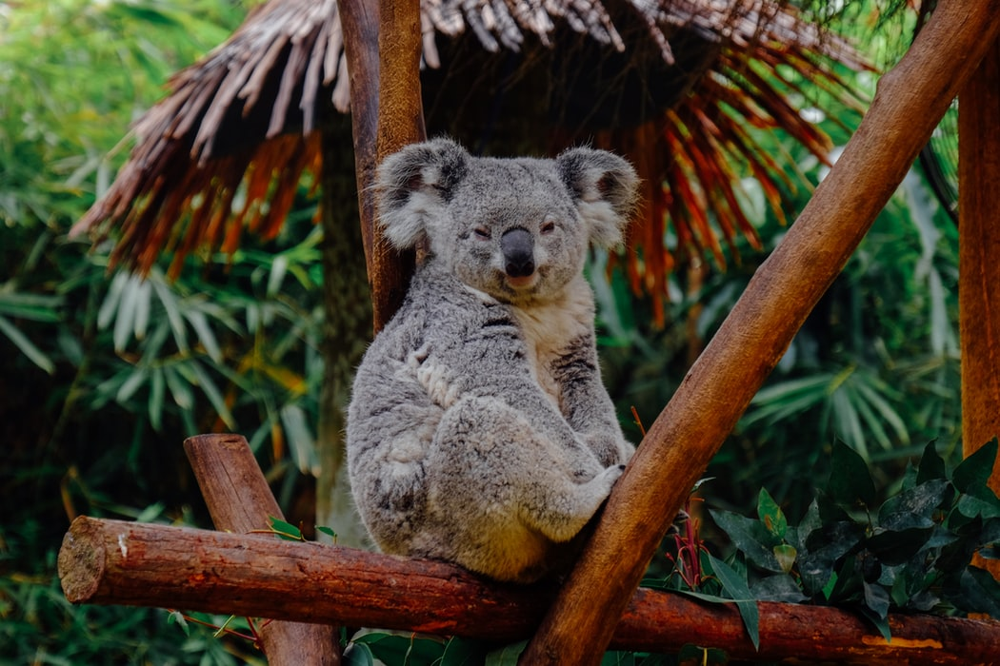
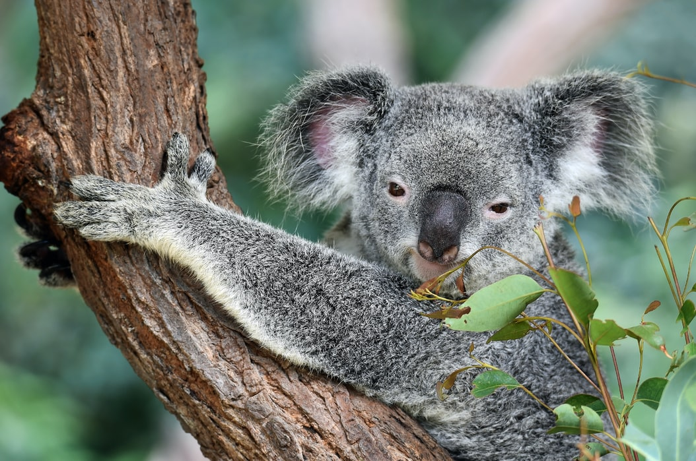
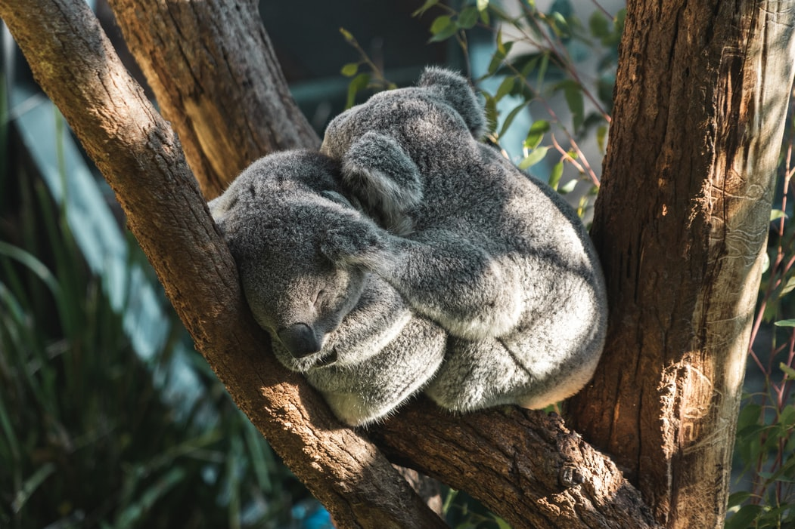

Koala As Specie
Koalas reside in eucalypt woods along Australia's eastern coast.
They are delicate animals that may grow to 80 cm/2.2 feet in
height and weigh just 14 kg/31 lbs. Baby koalas are known as
'joeys,' and they spend their first six months hiding in their
mothers' pouch. Koalas consume a lot of eucalyptus leaves (1
kg/2.2 lbs per day) and sleep for up to 20 hours per day! The
small infants of most marsupials develop in pouches. A koala
mother normally has one joey at a time. A baby koala is about the
size of a jelly bean. The newborn, known as a joey, is blind,
helpless, and once its born, This small creature finds its way
from the birth canal to its mom's pouch as soon as it is born. The
newborn koala reaches the pouch by using its two well-developed
senses—smell and touch—along with its powerful front legs and paws
and an instinct that informs it which way to head. For nearly
seven months, it remains snugly hidden away, growing and maturing.
After around six months in the pouch, a baby's mother begins to
create a particular material known as pap. This is fed to the joey
in addition to the milk it currently receives. Pap is derived from
the mother's intestines and contains bacteria that the joey
requires in its own intestines to breakdown an adult diet of
eucalyptus leaves. Around the age of seven months, the joey exits
the pouch to eat leaves but returns to nurse. When the joey is
around a year old, it quits nursing and only eats leaves.


Habitat, Behavior and Diet
Koalas reside in Australia's eucalyptus woodlands. They're always
eating when they The eucalyptus tree is also home to them. Koalas
devour a pound of eucalyptus leaves each day. The koala needs to
work hard to digest eucalyptus because of its poisonous
properties. Because of this, koalas are incredibly sleepy. Cozy
tucked in trees, koalas sleep for up to 18 to 22 hours. The water
Koalas consume is primarily found in the leaves they eat. Leaves
can even be stored in koala cheek pouches. It is possible to
detect eucalyptus in their breath.
Threats to survival
Koala populations declined dramatically in the late nineteenth and
early twentieth centuries due to fur harvesting. They are now
facing grave risks from habitat loss. Clearing of land, logging,
and bushfires—particularly the destructive 2019-2020 season—have
devastated a large portion of the forest in which they dwell.
Koalas require a lot of space—about a hundred trees each
animal—which is becoming an increasingly critical issue as
Australia's woods continue to dwindle. The International Union for
the Conservation of Nature has designated koalas as endangered,
naming them one of the top ten creatures most susceptible to
climate change. Carbon dioxide increases in the atmosphere reduce
the nutritional value of eucalyptus leaves (which is already
relatively low) and contributes to longer, more intense droughts
and wildfires. In reaction to dehydration, koalas are compelled to
cease resting and descend from the trees in search of water,
expelling valuable energy and increasing their vulnerability to
predators.
